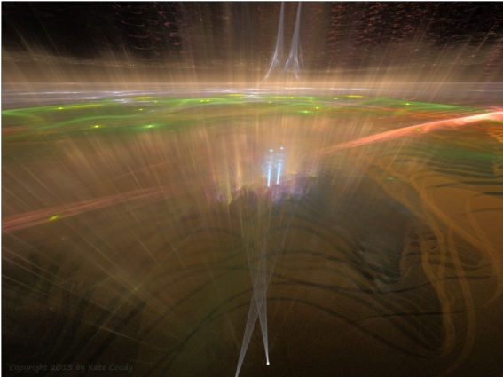

Beyond (Part 1)
by
Gregg Marchese
To Heaven Sent (Part 1) — the first story in this series
I'm too old.
The Master Monstruwacan shuffled across the dark metal floor of her chambers, musing. I'm too concerned with security and comfort to meet the challenges of these times. The Great Redoubt needs bolder, more intrepid Archons now.
Dione settled into the chair before her view table, here in her new quarters—not so comfortable as her old quarters half-way to the top of the mile-long Tower of Observation. Now when she looked out the large round crystal window, her sight was obscured by the spread of the pyramid side below her and the haze of light that leaked from the many embrasures angling down beneath her. How clear and dark her view had been just eight annums ago, before the Winged Shadow Creatures had attacked the remaining lower half of the Tower, and driven the Monstruwacans down here, to the last tenth of the Tower's former great height.
At least her view table had been salvaged. Dione looked down at the shimmering plate and caressed the dark wood that edged the screen. It usually reassured her that such a beautiful substance could be harvested from the Underground Fields—and grown to be harvested again eternally—but now she felt more troubled than reassured. A blight was attacking the trees, possibly because they were weakened by declines in the Earth Current powering the four artificial suns, or because some Malign Spore from the Night Land had burrowed its way in—or been carried in. The notes were right there on her view table...
Dione closed her eyes and rubbed her hands together. The knuckles had become stiff, the finger tips cold, as the annums had gone by. How spry she used to be, back in the early times of her Mastership. How little she had thought then of her body, of its limitations, its demands, its pain. Now constant aches drained her attention, distracting her from her once shrewd solutions to Redoubt problems. A whole list of them shimmered on the view table before her, a light beyond her closed eyes demanding attention, but the Master doubted now that she could conceive of a single solution for any of them. Not alone.
Dione opened her eyes and glanced to the door. No, not yet...Her eyesight blurred and she gazed inward, activating her brain elements to feel for that familiar communion she had long established with her main Aide. Nemia would not be available now for an exchange—this was Nemia's time to tend to her duties as Supreme Scholar—but Dione reassured herself of that deep connection, sensing Nemia's presence in her mind and knowing that Nemia sensed hers. Both looked forward to the time later when they would meet in these chambers and put their minds together to address these pressing Redoubt problems.
Reluctantly Dione withdrew from the brief communion and turned her attention to the view table. At least she could review and research, to be informed for Nemia's arrival.
The next problem shimmering on the screen was the Youth Leagues. How eager some of them were to join the ongoing Peregrinations into the West, to risk the unknown redemption—or horror—of the gold luminous mist. Others of the populations of the four-hundred and ninety two Cities of the Great Pyramid longed for the hope of the mist—people suffering despair, the injured and lame, elders facing their last annums (how well the Master understood their longing). All these were freely allowed to go, after they endured the Assessment and Preparation. But youth? Too many of the young people of the Redoubt were clamoring to join the Peregrinations, and it would distort the future populations of many Cities if the youth-drain were allowed to continue unmitigated.
But what could the Master do? Dione understood too well the impulses and drives of such youth. They had little belief in any future for their Cities and the Last Refuge itself, and so why not risk the hope and danger of the gold luminous mist for a chance at a better life beyond the Night Land?
Beyond the Night Land...Such a strange phrase, one she could never have conceived of in her own distant youth. Even now it seemed strange, as if there were no niche of proper shape within her mind to lodge it. Some current youth believe it almost without doubt. The increasing attacks by the Forces of the Night Land, including the assault on the Tower of Observation that had occurred in their lifetimes, compelled them. The Master had tried to explain to them—and trained the whole order of Monstruwacans to explain—that the escalation in the attacks might be meant to drive them out into the soul-devouring maw of the gold luminous mist.
Some had not listened. They were also compelled by the promise of hope, for they knew that in the forty-nine annums since the first Peregrination had crossed the Night Land unharmed and disappeared through the mist, that mist had gradually brightened and changed color, from green to gold. This some within the Redoubt saw as a sign of hope, of increasing strength and influence from the Powers for Good. Cautions from more experienced Monstruwacans had limited effect.
Many entities had appeared in the populations, speaking through their human mediums, claiming to be benign ancestors who lived now in growing bliss and harmony beyond the gold luminous mist. Ever they declared that they needed more souls and bodies to continue to build and grow this blessed realm. Every City had at least one such entity now, and some several. More and more youth were listening.
Dione sensed the futility of her efforts to counteract these influences. She was from an older time, a more cautious and distrustful generation humbled by known horrors, by direct observation of the cunning and deception of the Evil Powers that thronged the Night Land. For so long she had watched the Watchers, scanned for Giants, monitored the movements of Night Hound packs and recorded their howlings, pondered the anthropomorphic cavortings of the Ab-Humans, listened for the Silent Ones...
This too compelled the youth to go on Peregrination: all these dread evils no longer harmed the humans who went abroad from the Mighty Pyramid. Oh, the monsters loomed near, threatened and gestured, postured and displayed. The bell-ear of the North-East Watcher quivered constantly whenever a Peregrination was upon the Road, and the grim regard of all the Watchers intensified. The Giants marched forth and displayed new siege weapons and shook their cudgels. Night Hounds bounded beside the Road, showing smoking fangs and glaring with rabid red eyes. Ab-Humans performed frantic dances and bobbed their misshapen heads, waved distorted hands and feet.
Humans had passed among them all, and never once in all the sixty-one Peregrinations across forty-nine annums had a single human been harmed.
Of all the monsters of the Night Land, only the Silent Ones were no longer seen. Since that day when the funeral song had issued from the House, and the Silent Ones had appeared one by one before its door, to drift in eerie grace along the Road and disappear beyond the glowing mist in the West, no Silent One had ever been seen or sensed. The impulsive and overly optimistic among the populations—and their numbers were growing—believed that the Silent Ones had been benign ancestor spirits trapped by an evil spell from the House. They had been liberated by the song, to go to the paradise beyond the luminous mist, there to await a joyous reunion with their present descendants.
The Master Monstruwacan was not convinced. Perhaps the Silent Ones merely perceived that the luminous mist would be the best place to concentrate their prey, to freeze and enslave the greatest number of tender souls without having to chase them along the Road. Nemia had told Dione of such tactics. Ancient hunters had concentrated their prey thus, and made a vast and easy harvest. Drives, they had been called—
The Master noticed her thoughts drifting again, and brought her eyes back to the shimmer of the view table. Routinely her mind tried to conceive of some way to make the teachings of the Monstruwacans more convincing, the lessons of the new Elder Councils she had organized more penetrating, the stories/story-telling of the Scholars (who told of times not so long ago when Night Hounds really did kill) more effective. She failed to conceive of anything further she could do. Perhaps Nemia would have some idea. Such an impulsive youth the Supreme Scholar herself had been...
Dione forced her eyes to look at the next problem on the list. The New Foretellers...Their prophecies were not helping either, it seemed. Most of the new Foretellings peered but a short time into the future. Would the Foremost Foreteller die before he offered a final concurring vision?
Soon Dione's thoughts were drifting again, toward the joy of her upcoming communion with Nemia. She hoped Mett would not intrude too much this time.
"Logistics." Cerantae said the word with a flat dispassion that told her son Dryke how disgusted she was. "Can you and Enkarra bring some order to these growing mobs? We can't have them just milling around the Core Chamber!"
"It's not only to honor him that they come." A knowing hardness settled in Dryke's clear dark eyes. "They want to stand in the aura of the Earth Current, for however short a time. But we'll set up stanchions to channel them into lines."
Looking into the grim determination of her son's face, his bone-fair skin and blunt smooth nose above wide full lips, Cerantae's expression softened and her voice warmed. "Do your best. I'll leave the details to your good judgment. Remember to listen to your sister's suggestions; she's a keen mind too."
Dryke smiled patiently. "You know how well we work together. We'll take care of it."
Cerantae stepped forward and embraced her son. He hugged her back, offering as much comfort as he took. She murmured into his hair. "They know he's dying."
He pulled away and held her shoulders firmly at arm's length in his broad strong hands. "We've know it for a long time. He even prophesied it annums ago, before we were born. He—"
"Never believe you know the meaning of his prophecies, Dryke." Cerantae felt a tear slip from her eye and tremble on her lower lid. She did not distress to show such feeling here, in the privacy of the temporary quarters they had made for themselves in the converted storage chambers and maintenance rooms that surrounded the Core Chamber. Even in public, among the other New Foretellers, emotional discipline had loosened. Partly my influence, Cerantae knew.
Dryke lowered his hands but kept a loose touch on her forearm. "I honor your grief."
Cerantae stared at her son. How graceful and gentle her children had grown to be, humbled by the challenges of these times. Yet how mild such challenges were compared to the horrors of the final future Koniopses had seen in his visions! And now the Foremost Foreteller was dying—
"Don't be so sure you know the source of my feelings." Cerantae looked down at his broad hand on her arm. "To indulge in simple grief for our own loss could block or foreshorten our Foretelling visions." Her words sounded abrupt and dismissive. Where had she lost her own grace? Her words were honest though, and she must teach her children all they would need to know to continue the leadership of the Foretellers. And pass it on to their children.
It daunted Cerantae to think of how far into the future this knowledge must pass. Five-hundred thousand years...Twenty-five thousand generations...And so much had changed, just in the last three generations. Would their far future descendants retain the knowledge of Foretelling to guide the final days of the Redoubt? That would be a test perhaps for which no human could be fully prepared, but the present Foreteller leaders must do all in their power to help them.
Once again she must instruct. Now she looked into his eyes. "Tears may not always mean grief, Dryke. Humans cry at the beholding of beauty, at the humbleness of our tiny place in the great dark immensity, at the terror and wonder that we must all submit to the mystery of death."
"But not the Foremost. He's forever."
Cerantae peered a moment at her son's sly grin, then crumbled into giggling. It was an old joke among the New Foretellers: stoic Koniopses, steady as the Pyramid, forever...Cerantae giggled further, nearly hysterical, like a little girl she had almost forgotten. Then she stopped and became still. Only her mouth moved. "He is the oldest Foremost ever to hold the position. One-hundred and sixty at least. He never told me exactly. Perhaps he no longer knows. For so long his mind has been focused on the future, on the prophecies. He has seen the end of humanity, but does he really know the moment of his own end? Can anyone, even he? That may be the one area beyond which no prophecy can reach."
Dryke stood immobile except for a tiny twitch in his right eyelid. "That's where we must go, if we are to know whether the Peregrinations lead to salvation, or doom."
"Beyond death," she agreed. "Beyond the gold luminous mist. Escape from certain doom, or into it."
"He was so close!" Dryke's voice hissed with poorly channeled passion. His left hand, hanging limp at his side, flexed slightly as if he would make a fist. "Perhaps at the very end—"
"We are inured to hope." Cerantae knew she must be firm. "Concurrence is our way. There are no final endings nor beginnings, only cycles of concurrence. It is there we must look for any insight to guide us after— after this Foremost is gone. The next Foremost will flow forward gracefully from that transition."
His eyes flicked wider the merest twitch.
At once Cerantae realized Dryke was allowing these movements, using them to communicate with her, to lead her in a subtle dance— She almost giggled again. Who was the teacher, and who the student? She saw what he was asking, and answered. "No. I do not have that prophecy. The identity of the next Foremost remains unforetold. If your father knows, he will not say." She lifted one eyebrow a fraction of a metron. It was an exquisite movement, one which few humans had the control to enact.
He blinked, and she knew he was suitably humbled. Her meaning was conveyed: Let Dryke not think he had achieved the control and discipline required to become the Foremost himself.
But he was astute enough to perceive the question in her gesture, and answered. "No, of course not. I have not had such a prophecy either. You know most of my visions are of the past." He fell into classic Foreteller stillness so abruptly that Cerantae knew there was more. She grinned openly: a blatant appeal for truth.
He spoke from his stillness. "I don't matter anymore. Enkarra may."
Nemia hurried through the great corridors of the one-hundred and twenty-ninth City, her entourage of Scholars and support staff bustling along behind her. She didn't care who heard the broadcast sending of her brain-elements. Another confirmed entity. It's getting boring.
One of the younger male Scholars was bold enough to reply. Do you mean as well as your own, Supreme?
Nemia identified him as one most recently ordained and pushed into service as full Scholar. Perhaps we are too quick to advance them, however much we need their help in these times. She was careful to block anyone from reading this thought. Then to all of them: I mean along with all the others we've confirmed. It's past time we declared the phenomenon of ancestor spirits speaking through live human hosts legitimate, and turned our attentions to other matters.
A clamor arose from her staff. Nemia almost cringed, but out of habit listened to all the replies. After all, she'd trained them to be forthright and honest. No self-censoring to please the Supreme would weaken the Scholars under her leadership.
The populations will be troubled without our ongoing inquiry and confirmation.
Perhaps this is a ruse from the Night Land, to lull us into laxity!
What if the next entity is malign?
What other matters?
All good thoughts, but Nemia only replied to that last one. It came from the young male. The Supreme Scholar scanned her vast memory and called up his name: Abrax. Perhaps he had enough ambition to become truly useful. I have the confidence and love of the Master Monstruwacan. As she has mine. Together we are devising a way to peer through the gold luminous mist and spy into the other side.
Shock, awe, puzzlement, excitement arose. Someone sent, But the Great Spy Glass is destroyed! Only one oculus remains, and it is sadly reduced in range and resolution.
Abrax sent, Can't your entity just tell us?
That was shrewd, and Nemia let them all ponder the subtleties and multiple meanings in the question. Many of these entities that had emerged to speak through human hosts in each of the four-hundred and ninety-two Cities claimed that the place beyond the gold luminous mist was a paradise in the making, needing more human presences to come to full manifestation. Yet already it was a place of light and bliss and safety, of comfort and joy—if only more peoples of the Redoubt would risk the crossing of the Night Land and take the Road into the West.
So yes, many of the entities, speaking through their human hosts, were claiming that that place was safe. Nemia had her own entity, who at times spoke through her, with much the same message. Abrax's question implied: shouldn't Nemia be able to tell the truth of such a message? Shouldn't they all be able to trust that the entity who spoke through the Supreme was benign, and would not deceive them? If not, then how could they trust the Supreme? As Scholars, weren't they supposed to be able to sense truth implicitly?
Nemia extended the pause, to be sure they had all considered these thoughts, before she replied. The entities can tell us, but can we believe? We Scholars base our decisions and actions on knowledge. Perfect, ultimate knowledge is our goal, and we strive through research and deduction and patterning to attain as close to that goal as possible, even while we know that there is no pure knowledge. All is tainted with uncertainty, however slight. The uncertainty of these appeals from the entities is much more than slight.
They clamored to reply.
Yet less than half.
Many still take the risk.
Choices are narrowing, time is shortening.
What have they to lose?
Their souls. The Supreme conveyed her solemn concern in that short phrase. We Scholars have learned much about acceptance of ambiguity since Mett went into the mist, and are learning more. We can still make decisions on imperfect knowledge, and advise caution.
At mention of the previous Supreme Scholar, who had been a sure advocate of the salvation that awaited beyond the mist, the bustling group went silent, marching silently along behind their current Supreme, thoughts exploring once again the story of Mett. He had been among the earliest to honor the first (seemingly) benign entity who had come forty-nine annums ago now, to exhort the way into the West, and had been the very first to identify her by name. Mett had been the only Redoubt resident to accurately predict the nature of the song that issued from the House of Silence, and what it said about the nature of the Silent Ones. And Mett, Supreme Scholar, had been among that first Peregrination that won safely across the Night Land on the Road Where the Silent Ones Walked, where he disappeared with a wave and a smile into the luminous mist.
Nemia wanted to tell them that perhaps Mett had been more mad than brilliant, but began to feel a strange familiar slipping sensation in her body, a sliding in her mind that became a gentle nudge. Her last thought before she shifted her self aside and allowed her entity to live again through her was, I should not have thought his name.
Oh yes you should! Mett stopped Nemia's march and leaned her body against the corridor wall, brushed with her hands at her long black braids streaked with white. You really must keep my story active and circulating among you. It contains much wisdom to guide you.
Mett looked through Nemia's eyes at the stunned Scholar retainers. "I won't lecture you," he said through Nemia's lips, in his own lilting and casual voice. "But I must tell you again that the conviction to accompany the first entity and win through the luminous mist was the best decision of my life. To renounce this dwindling, oppressive and temporary safety for the eternal joy and freedom of the realm beyond— Ah! What a cruel contrast!" He laughed with ringing mirth. Still he stroked her hands through her hair, captivated by the smooth sensation.
Young Abrax had the courage to respond to the legendary former Supreme. "Ambiguity is our ally, our Supreme teaches us. Not knowing propels our inquiries."
"I knew beyond all doubt," Mett said. "That is an ally you might one day attain, if you strive to the utmost, and allow truth to claim you. I trusted my entity totally, as you should trust yours." He stretched a grin across Nemia's face.
She wanted to reply, make some rejoinder to Mett's annoying cockiness, but Nemia knew that Mett's presence would provide crucial knowledge for her attendants to study. She remained in a void-space within her own soul, where she was preserved sane and whole, but could not act in her body. She wanted to tell her staff, Trust only what you know, but had learned better than to advise them. They must learn for themselves, for one among them would one day replace her as Supreme. Perhaps soon...Besides, her sendings would only echo back around her.
She could still commune with Mett within, though. Describe to them again the lands that are forming beyond the mist.
Mett nodded her head and took a poised breath to gain their attention. "A world is growing there. The only place even remotely like it you have known is the Underground Fields, and the Quiet Country, with its green swards, its cool bowers and groves, its falls and sprays of water. Yet this world beyond the mist is many times vaster, and far richer in its living wonders, and warmed and blessed by a source of glorious light that never fades, always shines, ever soaks the air and growing ground with its beauty. People live there, free in the warm open air, singing and dancing as they gather sumptuous food and drink crisp clear water that flows in chattering rivulets. There they birth children, and fear is unborn, and love and laughter delight their days."
The Scholars were clamoring.
"What is this light? Does it come from Earth Current?"
"What are days? Is it never Night? How can they endure such strangeness?"
"Watchers too must be there. Or perhaps Fixed Giants."
Mett held Nemia's arms across her chest and leaned her against the corridor wall. He flicked her eyes to the various Scholars as they spoke. Then he burst out laughing. He shook her head and laughed some more. His sharp wheedling voice pulsed from her mouth. "Nothing you have seen for many a million years can compare. But know this." He held up a plump finger. "Deep in the origins of what you are, you are made for such a place. This—" He waved the plump hand dismissively at the tall corridor over his head, and they knew he meant The Great Pyramid standing in The Night Land "—is no sane home for humanity. It is only a shrinking prison." The eyes in Nemia's face brightened, and her head cocked as if with inspiration. "Like your minds. Yes, even you Scholars are shrinking in your mental capacities. Imagine what philosophic glories you will conceive when your eyes gaze ever on vistas of light!"
It was a ringing appeal, echoing down the tall corridor, and many blinked and nodded, captivated. Nemia sensed their growing conviction, and sent another thought to Mett. I would reassure them of your identity now.
Mett paused and sent back, Yes of course, that would be wise. So lush to feel this body, this glorious hair— But yes, please— He withdrew aside and allowed Nemia control of her body again.
She blinked and looked around at the staring Scholars and support staff, black and brown robes rustling, the angling gray walls of the corridor stretching up far overhead. She felt the soft texture of her braid in her hand, and with a twitch released it. She always felt so abrupt, lurching back into her body like this.
"Mm—" She cleared her throat, needing a moment to restore such delicate function as speaking. "Mett was my Mentor, and I knew him well. We—" She lifted both hands to touch her temples. "Communed. He was a brilliant teacher, and forced me to learn and grow without weakening me. His mind was exquisite, perhaps greatest among all Scholars ever—"
Mett chuckled within. I knew it was wise to let you speak to them.
"—but fanatical at times. Enraptured by his own revelations."
Come now! Mett was indignant and tried to push back into her body, but Nemia held firm. They both knew he could not seize her against her will.
Nemia had more to say. "Mett became focused on a single hope for salvation, and enamored of the first entity to visit us from beyond what was at that time the green luminous mist. Meyr, he called her, believing her to be the consort of the Redoubt Founder, an incarnation of Mirdath, and even an embodiment of some divine feminine principle from beyond the Night Land."
Mett sent his hurt and disapproval. Well, she was, you know. At least, her spirit was from before a time when the Night prevailed entirely. You never talked to her directly, as I did.
"Even now our former Supreme Scholar believes with all his soul that he perceives this wondrous world in formation, to which we may safely go, and live a new life in natural light and splendor." Nemia looked around at the intent faces. "Yet we are Scholars. Think you! Could it be he is allowed to perceive an illusion, and allowed to come to us and tell us of its graces, fully benign and believing, that we may believe too?"
An older woman scholar stirred. "It may be false." And a research aide: "The forces of the Night Land are subtle."
Nemia heard the routine recitals, the lack of conviction even among her closest staff. They all wanted to believe! That was their greatest danger.
And their greatest hope. Mett pushed gently at her soul again, and now Nemia shifted aside again to give him her body. She had said what she must, spoken dutifully for reason and knowledge, and now she would listen as raptly and longingly as the rest as Mett regaled them with poetic diatribes of bliss and beauty and safety. Nemia felt the wise caution against appeals from without, that had so long prevailed in the Redoubt, slipping away even among her wisest Scholars. Even within herself...
She longed to be in the grounding presence of the Master Monstruwacan once more.
© 2010 by Gregg Marchese.
Image © 2015 by Kate Coady.